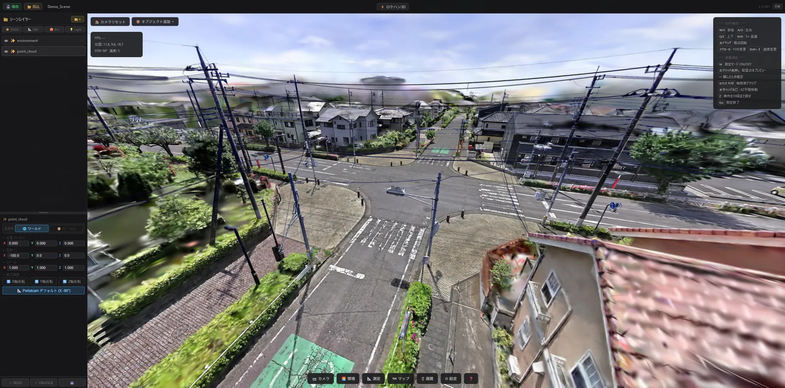
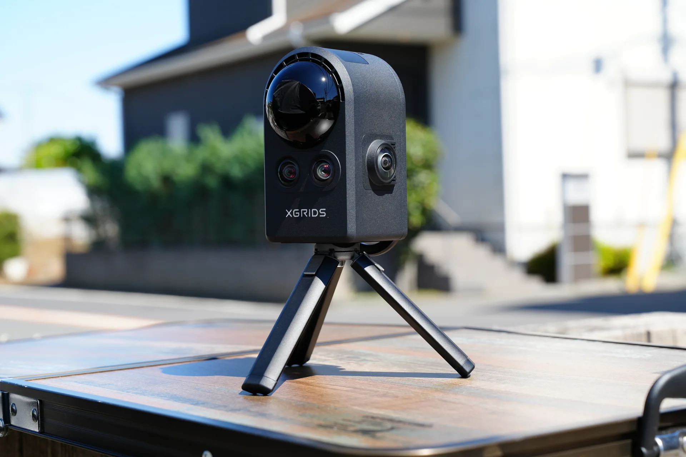
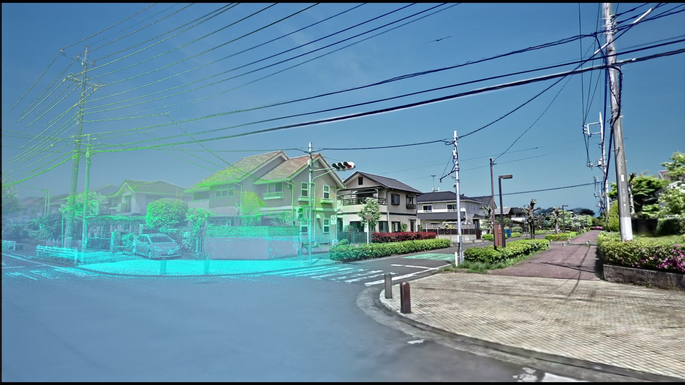
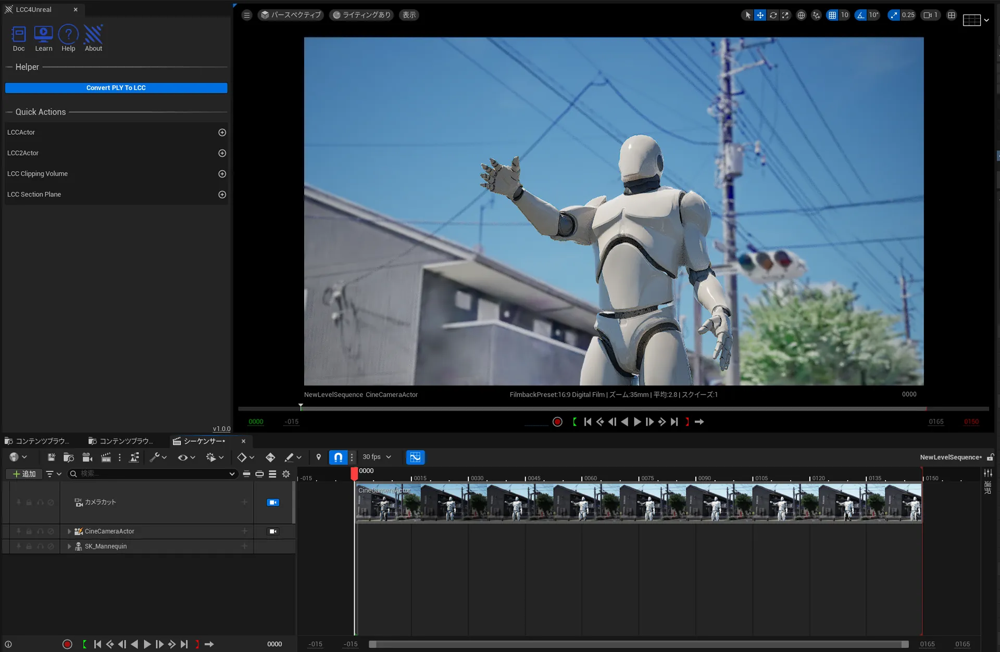
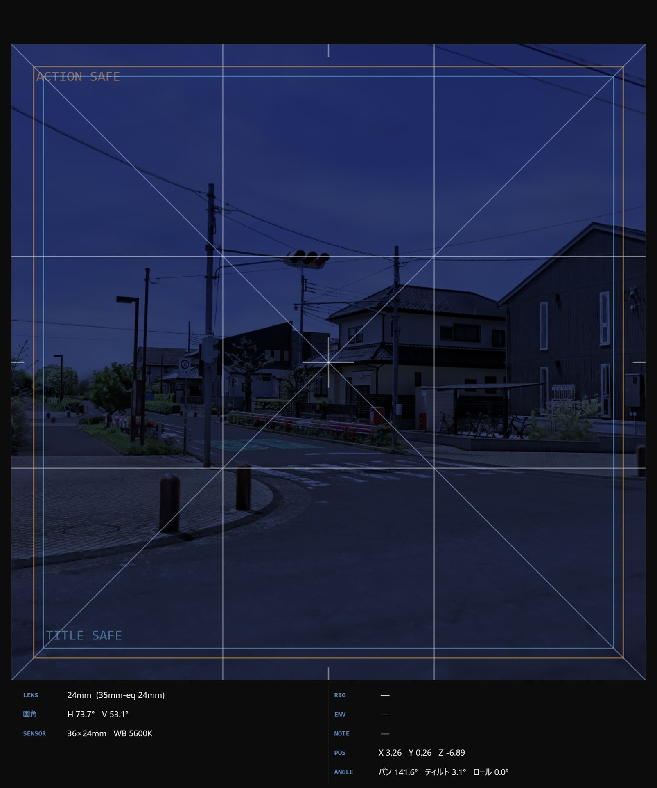

— ABOUT THE DATA —
ロケハン3D が扱う 3D データの取得方法、
そして Chrome 上で動作するロケハン3D アプリケーションについて。
3D Gaussian Splatting (3DGS) は、
複数視点の写真や動画から実空間を高密度に復元する技術です。

従来のメッシュ + テクスチャでは表現困難だった
半透明物・反射・微細な照明変化を、
撮影時の見た目のまま保持します。
ラスタライズに近い高速描画方式により、
NeRF のような重い推論なしに視点移動が可能。
意思決定の速度に直結します。
1 シーンあたり数十〜数百MB。
WebGL / WebGPU で動作するため、
iPhone, Mac, iPad, Laptop だけで誰でも開ける配信形式が組めます。
主要な学習・編集・配信ソフトと相互運用が可能です。
撮影は XGRIDS PortalCam を中心に、
SLAM ベースの実空間スキャンを採用しています。

XGRIDS PortalCam は、LiDAR と複数カメラを統合した SLAM 型の
ハンドヘルド／ウェアラブル スキャナー。
歩いて回るだけで実空間を Gaussian Splatting 形式で出力できます。
広域ロケや屋上・水辺・段差など徒歩で回り込めない範囲は、
ドローン空撮（多視点撮影）からの 3DGS 再構築にも対応。
PortalCam の地上スキャンと組み合わせることで、
空 ↔ 地上の継ぎ目のない 3D 空間を一度に持ち帰れます。
3DGS データはロケハン用途に留まりません。
Blender / Unreal / Unity / Maya / After Effects といった
ツールへ持ち込めば、3D トラッキング基準、アニメーションプリビズ、ライティング検証、
後段の VFX 合成までを同じ実空間データ 1 つで横断できます。

3DGS は実空間スケールで取得されているため、After Effects / Mocha / SynthEyes / Blender のカメラトラッキングや 3D 合成のジオメトリ基準としてそのまま活用可能。 実写素材との整合精度が大きく向上します。

Unreal Engine 5 / Blender / Maya にインポートし、CG キャラクターやカメラワークを 実空間に重ねて事前検証。動線・尺・アングルを撮影前に詰められるため、 当日の判断スピードが段違いになります。

3DGS は軽量かつリアルタイム描画に特化しているため、 環境光や疑似 HDRI を差し替えながら、時間帯・天候・照明位置の検証を即座に回せる。 美術・照明部のシミュレーション環境としても優秀です。
「ロケハン3D」は、Chrome ブラウザ上で動作する
3DGS ビューアー兼仮想カメラアプリケーションです。
スキャンした .ply / .Rad ファイルをドラッグ&ドロップするだけで、
実機相当のレンズシミュレーション、距離測定、環境ライティング、
メタデータ付き JPEG 書き出しまで、すべてブラウザの中で完結します。
Chrome があれば即起動。Mac / Windows / Linux 共通。スタッフ全員に同じ環境を即配布。
3DGS データはブラウザ内で完結。サーバーへのアップロードなし、機密ロケも安心。
Windows / Mac / iPad / iPhone、どの端末でも同じビューアーで確認可能。スタッフが手元の機材で即チェックできます。
初回読み込み後、PFを保存するとネット接続なしで動作。ロケ現場・移動中・電波の届かない屋内ロケでも対応。
3DGS 表現以外にも実現したいビジョンがございましたら、
お気軽にご相談ください。